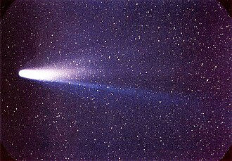
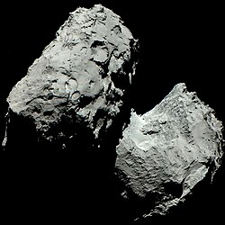
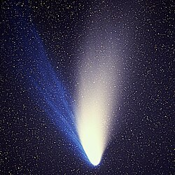
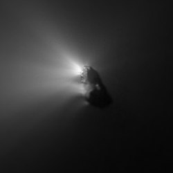

Halley's Comet seen from Earth in 1986.
Comets are small icy Solar System bodies that, when close enough to the Sun, partially sublimate, producing a visible atmosphere known as a coma and, in many cases, a tail..
The nucleus is the main body of a comet.
It is typically a few kilometers in diameter and is composed of ice, dust, and rocky material.
As the comet approaches the Sun, the coma can expand to several times the diameter of Earth, while the tail may extend over one astronomical unit (AU) or more.
Some comets can be seen from Earth, and if their tail is bright enough, they can be dubbed "great comets".
Comets are notable for their highly eccentric orbits, which can be classified by orbital period: short-period comets (under 200 years) and long-period comets (over 200 years, sometimes thousands, or even millions.)
They originate from the outer regions of icy bodies like the Kuiper belt, or the Oort cloud.
Some comets follow parabolic or hyperbolic trajectories, passing the Sun only once before being ejected into interstellar space.
Rarely, interstellar objects from outside the Solar System enter it, and some exhibit cometary activity.
Due to their dynamic nature, comets may disintegrate from tidal forces, collide with other bodies, be ejected from the Solar System, or become extinct - losing their volatile materials, leaving an asteroid behind.
Comets have been observed and recorded for millennia.
Ancient Chinese astronomers maintained the most extensive historical records, documenting cometary appearances as early as the 7th century BCE.
In Europe, comets were frequently associated with impending doom or significant events, reflecting their mysterious and transient nature.
While people like Aristotle claimed comets were an atmospheric phenomena, others like Seneca would question him and suggest that they were more likely astronomical, since they are more permanent and undisturbed by winds.

Nucleus of 67P/Churyumov-Gerasimenko imaged by the Rosetta spacecraft. Source
In the 16th century, Tycho Brahe was the first to prove using parallax measurements that comets were not atmospheric events, but distant celestial objects.
Issaac Newton suggested that comets were astronomical bodies, and as such they would follow an orbit in the shape of a conic section.
He identified that those of 1531, 1607, and 1682 were the same and that it would return somewhere in 1758-59.
Though he did not live to see it, the comet was named Halley’s Comet, making it the first recognized as periodic.
Throughout the 18th and 19th centuries, improvements in telescope technology and orbital mechanics allowed astronomers to discover and track an increasing number of comets.
In 1950, astronomer Fred Whipple proposed that comet nuclei were not mostly rocky with ice, but instead a “dirty snowball”.
This was later proven by several mission, dubbed the "Halley armada" (Giotto, VeGa 1 and 2, etc.), that visited Halley's Comet.
Today, comets are discovered through ground-based telescopes, automated surveys, and space-based observatories.
While amateur astronomers have historically contributed significantly to comet discovery, their role has diminished with the advent of new technology.
Space exploration has further advanced cometary science, with missions including the Deep Impact probe, which released an impactor onto Comet Tempel 1, the Stardust mission, which returned samples from Comet Wild 2, and the Rosetta mission, which achieved the first soft landing on a comet, Churyumov–Gerasimenko.

Comet Hale-Bopp seen from Earth in 1995. Both the ion (blue) and dust tail (white) can be seen. Source
At the center of each comet lies the nucleus, the solid core typically ranging from a few hundred meters to tens of kilometers in diameter.
Composed of a mixture of ices, dust, and rocky particles, the nucleus is often described as a “dirty snowball.”
The ices include volatile compounds such as water, carbon dioxide, carbon monoxide, methane, and ammonia, among others.
Several more complex organic compounds have been detected in the nuclei, including hydrogen cyanide, formaldehyde, ethanol, long-chain hydrocarbons, and amino acids.
As the comet approaches the Sun, these volatiles sublimate, forming the coma and tails.
This process leaves behind the larger and darker organic compounds which are the reason for the extremely low albedo of comets.
The sublimation process is not uniform across the nucleus.
Localized regions of higher volatile concentration or exposure to sunlight can produce jets - streams of gas and dust that erupt from the nucleus.
These jets can influence the comet’s rotation and even cause fragmentation.
Comets exhibit a bright, fuzzy atmosphere of gas and dust known as the coma.
It forms as the nucleus heats up and volatiles sublimate, releasing gas and dust particles.
Comae can expand to diameters up to 15 times that of Earth, though their size depends on the comet’s distance from the Sun and the abundance of volatiles.
When close to the Sun, comets develop elongated streams called tails.
There are two primary types: the dust tail, which is curved and composed of microscopic dust particles pushed away by solar radiation pressure, and the ion tail, which is straight and consists of ionized gas interacting with the solar wind.
Both tails point generally away from the Sun, with the ion tail often extending tens of millions of kilometers and the dust tail sometimes reaching lengths of over one astronomical unit.

Nucleus of Halley's Comet, a short-period comet, imaged by the Giotto spacecraft. Source
Short-period comets are defined by orbital periods of less than 200 years.
They are further subdivided into three main groups - Encke-type, Jupiter-family and Halley-type comets.
Encke-type cometshave the shortest orbital periods (typically less than 10 years) and do not reach the orbit of Jupiter.
With periods of less than 20 years and low orbital inclinations, Jupiter-family comets frequently cross Jupiter’s orbit and are dynamically influenced by the planet.
Halley-type comets are characterized by orbital periods between 20 and 200 years and higher inclinations, often retrograde.
Short-period comets originate primarily from the Kuiper belt or the scattered disc regions, populated by small icy bodies.
Occasionally, long-period comets transition to short-period orbits following gravitational perturbations by giant planets, particularly Jupiter.
Long-period comets have orbital periods exceeding 200 years.
Their orbits are often highly inclined and eccentric, suggesting an origin in the theoretical Oort Cloud.
Some long-period comets initially exhibit osculating orbits with eccentricities greater than one, but perturbations from planetary encounters can reduce their eccentricity over time, eventually returning them to the inner Solar System.
Non-periodic comets reach a perihelio once and do not return to the Sun, following either parabolic or hyperbolic trajectories that ultimately eject them from the Solar System.
A unique example is the long-period comet C/1980 E1 (Bowell), which was ejected after a close encounter with Jupiter.
In rare cases, non-periodic comets are interstellar visitors, such as 2I/Borisov, which originated from outside the Solar System.
Sungrazers are comets that pass extremely close to the Sun, often within a few thousand kilometers of its surface.
These close approaches frequently result in the comet’s disintegration due to intense solar radiation and tidal forces.
The Kreutz group is the most famous family of sungrazers, believed to originate from the fragmentation of a single, large progenitor comet.
Main article: Centaur
Centaurs are a class of minor planets with orbits that cross or lie within the region of the giant planets, typically between Jupiter and Neptune.
While most Centaurs do not dissipate gases and dust like comets, some display comet-like activity like the development of a coma.
Once such activity is confirmed, these objects are often classified as comets as well.
Centaurs are thought to be transitional objects, originating from the Kuiper belt and eventually evolving into short-period comets.
Main article: Interstellar object
Interstellar objects are characterized by hyperbolic trajectories, particularly eccentricities significantly greater than 1, indicating an origin outside the Solar System.
Among the three known interstellar visitors, 2I/Borisov and 3I/ATLAS exhibit clear cometary activity, classifying them as interstellar comets.
Active asteroids are minor planets with orbits typical of asteroids (semi-major axes less than Jupiter’s) but exhibit comet-like features, such as comae or tails.
They are distinguished by a Tisserand parameter relative to Jupiter greater than 3.08.
While some active asteroids have compositions similar to asteroids, others are ice-rich and are thus reclassified as comets.

Dark spots on Jupiter left by the impact of Comet Shoemaker-Levy 9
Comets are susceptible to disintegration due to solar heating, tidal forces, or explosive outgassing.
Fragmentation events are well-documented, such as the breakup of Comet Shoemaker–Levy 9 before its collision with Jupiter in 1994, and the splitting of Biela’s Comet in 1846.
Some comets observed today are remnants of such comets, including Neujmin 3 and Van Biesbroeck, both fragments of the same progenitor body that approached Jupiter.
The unstable orbits of comets occasionally lead to collisions with planets or the Sun.
The most famous example is the impact of Shoemaker–Levy 9 with Jupiter, the first directly observed collision between two Solar System bodies.
Gravitational interactions with giant planets can eject comets from the Solar System, sending them into interstellar space on hyperbolic trajectories.
A notable case is C/1980 E1 (Bowell), which, after a close encounter with Jupiter, was flung onto an escape trajectory, never to return.
Ejected comets thus resemble interstellar objects like 2I/Borisov or 3I/ATLAS.
Repeated passages near the Sun gradually deplete a comet’s volatile ices, transforming it into an inert, asteroid-like remnant.
This process, known as extinction, occurs more rapidly in long-period comets than in Jupiter-family comets.
Studies suggest that up to 6% of near-Earth asteroids may be extinct cometary nuclei.
The first mission to a comet was the International Cometary Explorer in 1985, which passed through the plasma tail of 21P/Giacobini-Zinner at a distance of 7,800 km.
In 1996, a series of spacecraft visited 1P/Halley, among which are Giotto by ESA and the two VeGa missions by the Soviet Union.
Giotto, apart from making the closest approach (605 km) and returning the first images of a cometary nucleus, also passed 26P/Grigg-Skjellerup at 200 km, but its camera got destroyed during the Halley flyby.
Deep Space 1 also visited 19P/Borelly in 2001 as a part of an extended mission.
Stardust was a mission that collected dust samples from the coma of comet 81P/Wild 2 in 2004, as well as samples of cosmic dust, and returned them to Earth for analysis.
Rosetta was a mission by ESA to the comet 67P/Churyumov-Gerasimenko.
In 2014, it reached the comet, entered orbit and deployed the lander Philae.
In 2005, the Deep Impact probe blasted a crater on Comet 9P/Tempel 1 to study its interior.
The results showed that most of a comet's water ice is below the surface.
Renamed EPOXI, it made a flyby of comet 103P/Hartley 2 in 2010.
As part of Stardust's extended mission, it revisited Tempel 1 and its crater, caused by Deep Impact.
In 2035, Tianwen-2 will visit comet 311P/PANSTARRS as part of its extended mission after collecting samples from near-Earth asteroid and quasi-satellite of Earth Kamo'oalewa.
Another upcoming mission is the Comet Interceptor by ESA and JAXA, which will wait for a suitable long-period comet to fly by.
External links
{kind=link}
{kind=link}
{kind=link}